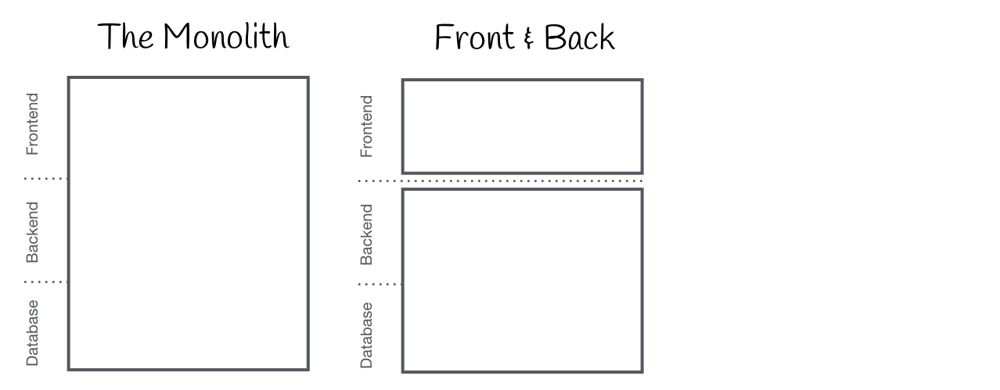
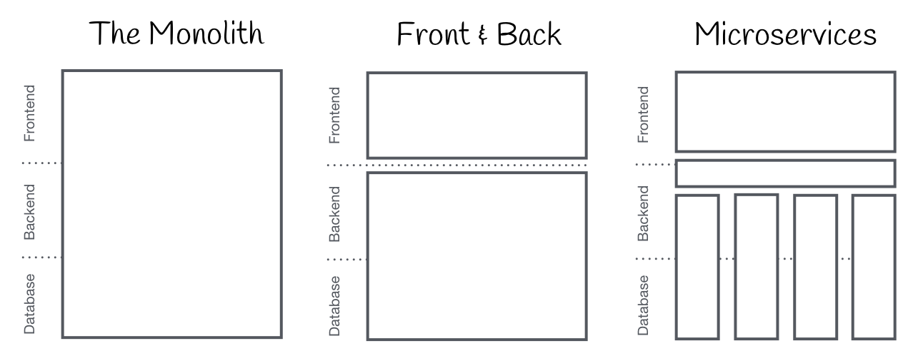
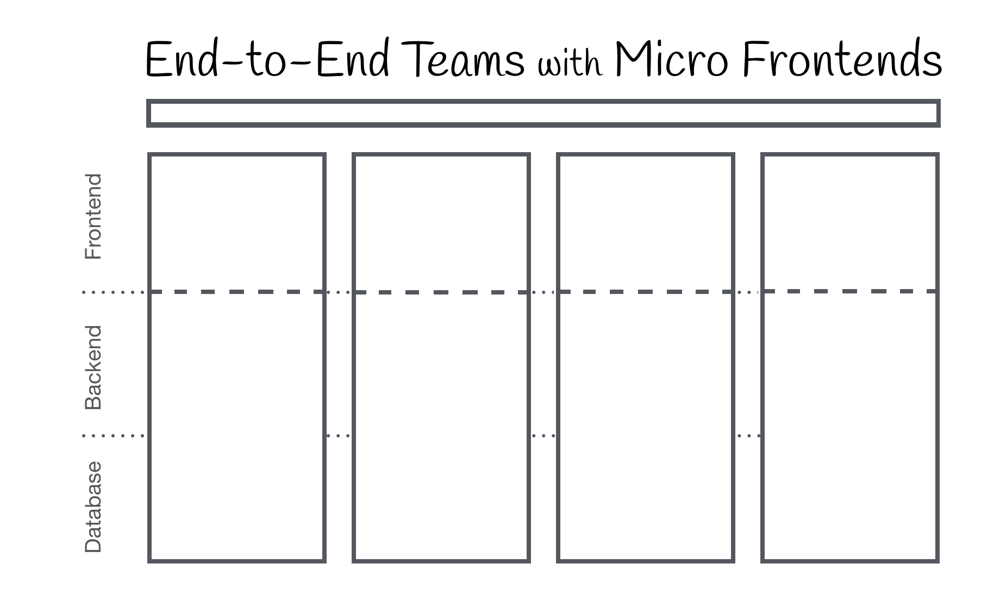

class: front-page # Microfrontend - NAVSPA  ??? Prate litt om microfrontends, og mer spesifikt skal jeg snakke om NAVSPA som er ett bibliotek utvilket her på NAV. Tiden er kort, så la oss bare hoppe inn og snakke litt om historien bak. --- # Bakgrunn <img src="images/monolith-frontback-microservices-0.png" class="img inverse"/> <div class="credits"> https://micro-frontends.org/ </div> ??? ### Historisk bakgrunn I gamle dager var det ikke så uvanlig at all kode relatert til ett løsning ble pakket inn i en og samme "pakke", og man skapte seg ofte en alt-eller-ingenting setting. Dette gjorde ting en del vanskeligere å forvalte over tid. Og spesielt vanskelig var det til tider at frontend-koden gjerne var skrevet med backend-språk. --- # Bakgrunn  <div class="credits"> https://micro-frontends.org/ </div> ??? ### Historisk bakgrunn Så på ett eller annet tidspunkt ble JavaScript en godkjent greie i bransjen. Og vi begynte å se at vi kunne splitt frontend og backend kode litt fra hverandre. Idag er derfor slett ikke uvanlig at vi ser en frontend kodebase med en tilhørende BFF (backend for frontend) type arkitektur. --- # Bakgrunn  <div class="credits"> https://micro-frontends.org/ </div> ??? ### Historisk bakgrunn Men vi var jo ikke ferdige der. Backend-kodenbasen hadde jo ett veldig monolitisk preg fortsatt, og microservices ble plutselig en ting. Dette ga oss muligheten til å jobbe på mer isolerte problemstillinger, og kanskje til og med bruke forskjellige teknologier basert på hvilket problem vi skulle løse. Meeen, frontend-boksen er fortsatt en monolitisk greie (e.g den store frontend-boksen). Og det er her microfrontends kommer inn. Og av akkurat de samme grunnene til at man ønsker å splitt opp backend-kodebasen sin, så kan det (men ikke alltid) gi noen fine fordeler ved å splitt opp frontend-koden. --- # En mulig bedre løsning  <div class="credits"> https://micro-frontends.org/ </div> ??? Så kanskje er det noe mer alà tegningen vi har oppe her nå vi er på jakt etter. Istedet for å store frontend-boksen vi hadde på forrige slide, så har vi nå ett tynn-liten frontend lag som bare syr sammen frontend-bitene fra flere steder. En sånn løsning kan gjøres teknologi agnostisk, og hvorvidt noen velger generere koden frontenden sin med vue, angular, react eller det neste kule biblioteket spiller ingen rolle. Så lenge man har en felles forståelse av ett API, så vil det være mulig å sy sammen løsningene. Og det er dette NAVSPA-biblioteket forsøker å hjelpe til med. --- # NAVSPA Ett hjelpe-bibliotek for å bygge opp micro-frontends <div class="credits"> https://github.com/navikt/navspa </div> ??? Så hvordan fungerer sånn egentlig... Konseptuelt, og forsåvidt teknisk er det en veldig enkel løsning. Og vi skal ta en titt på hvordan på det nå. NAVSPA består av en synkron-versjon som er avhengig av at scriptene og css'en er lastet inn i forkant. Samt en asynkron-versjon som bruker ett asset-manifest for å laste inn det som er nødvendig for dere. Vi starter med å ta en rask titt på den synkrone-biten, siden den er litt mer rett frem. Så kan vi titte mer på den asynkrone versjonen når vi drar fram koden etterpå. --- class: cols two # NAVSPA Ett hjelpe-bibliotek for å bygge opp micro-frontends .col[ Eksportering ```tsx const scope = window['NAVSPA'] = window['NAVSPA'] || {}; function eksporter<PROPS>( name: string, component: React.ComponentType<PROPS> ) { scope[name] = { mount(element: HTMLElement, props: PROPS) { /* mount at element */ }, unmount(element: HTMLElement) { /* unmount element */ }, } } ``` ] .col[ Importering ```tsx function importer<PROPS>( name: string ): React.ComponentType<PROPS> { const app = scope[name]; return (props: PROPS) => ( <NavSpa name={name} app={app} props={props} /> ); } ``` ] <div class="credits"> https://github.com/navikt/navspa </div> ??? Vi starter med å ta en rask titt på den synkrone-biten, siden den er litt mer rett frem. Så kan vi titte mer på den asynkrone versjonen når vi drar fram koden etterpå. ### Eksportering Så overordnet og konseptuelt, så vil eksportering av en react-komponent bare legge til en liten script-snutt i koden deres. Så når scriptet kjøres lagres det informasjon om den eksporterte appen på ett global scope (window i browseren) med ett kjent format. (mount/unmount). Nå er NAVSPA per idag veldig rettet mot react. Men så lenge "APIet" med `mount`/`unmount` er ivaretatt så vil det fungere med alle mulige bibliotek. ### Importering Importeringen er litt mer styr, men dette er pakket inn `NAVSPA` komponenten dere ser i koden der. Det er er react-komponent (fordi de fleste flatene våre idag er basert på react), denne komponenten håndterer: - error-boundry for å fange opp feil i appen som er importert - lager en `div` som appen kan mountes i - propagerer oppdateringer av props - passer på at unmounting skjer riktig --- class: center middle # KODE TID --- # Lenker - https://micro-frontends.org/ - https://github.com/navikt/navspa --- class: center middle # The end